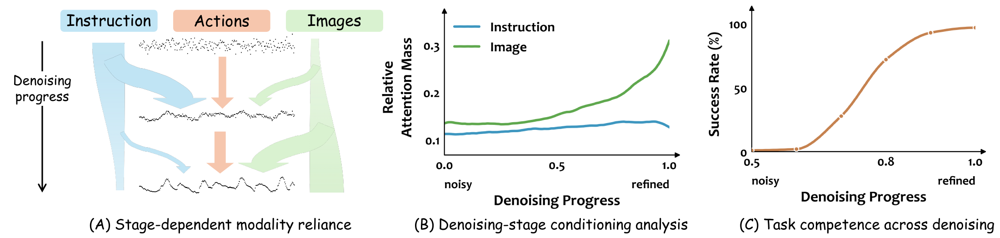
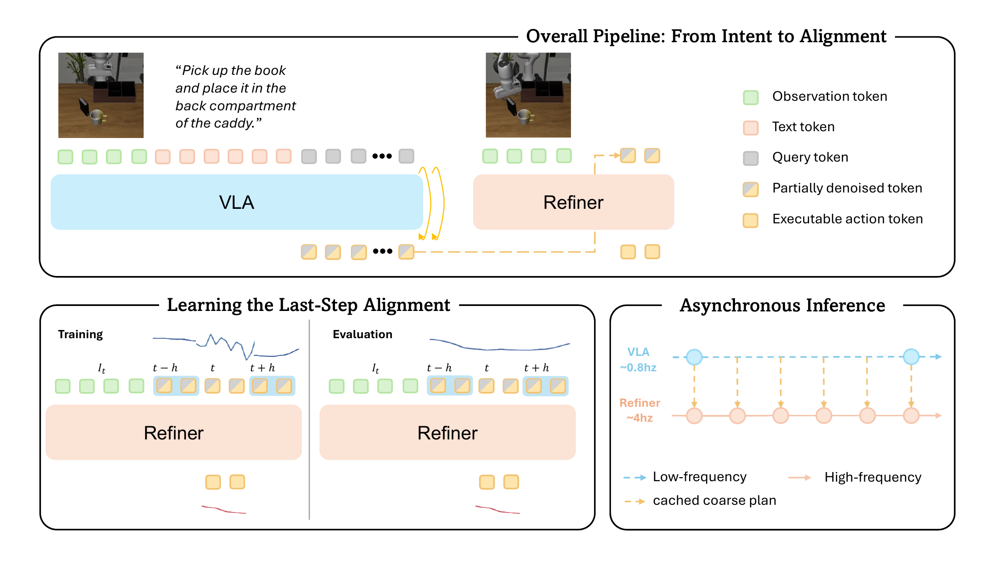
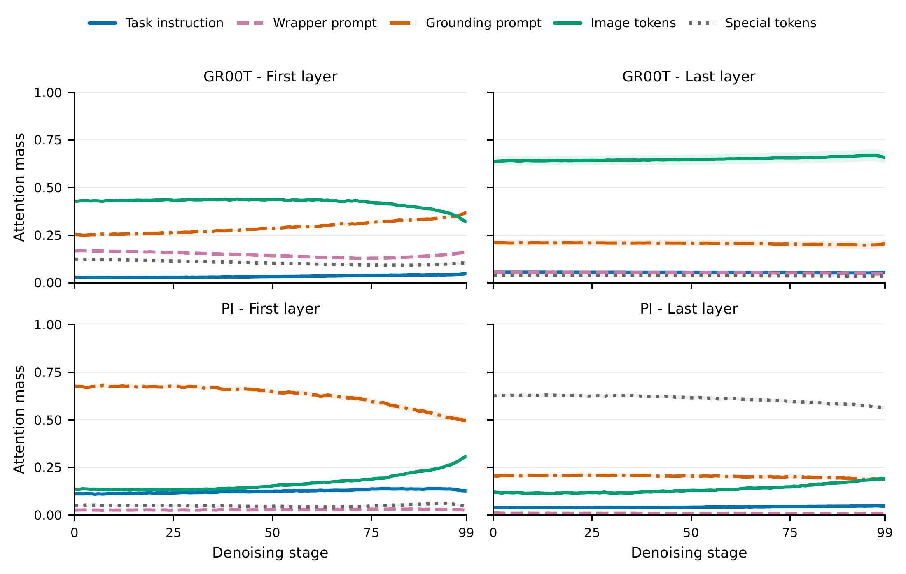
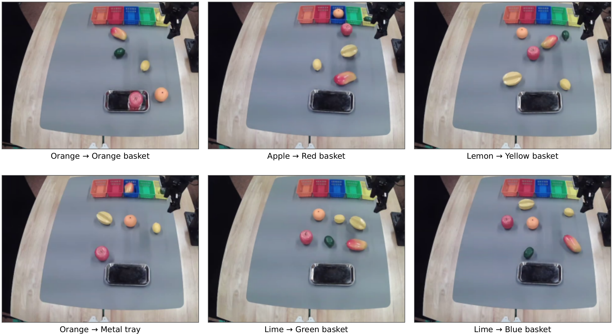

Form task-aware structure
A high-level VLA performs early denoising over a long horizon, producing an intermediate action trajectory that retains task intent.
Research project
1Michigan State University 2Ant Group
A stage-aware hierarchy that reuses task-conditioned action structure while continuously refining local actions with up-to-date observations.
Language instructions describe intent that often remains stable over many control steps. Visual observations, in contrast, change continuously as the robot moves and interacts with the scene. Processing both at the same rate can repeat expensive high-level computation without improving local responsiveness.
Our analysis suggests that generative action models already develop a useful coarse-to-fine structure: task-relevant action structure appears before denoising is complete, while later stages increasingly support alignment with the current observation.

We use partially denoised actions as a natural interface between slow, task-aware generation and fast, observation-conditioned refinement.

A high-level VLA performs early denoising over a long horizon, producing an intermediate action trajectory that retains task intent.
The intermediate trajectory is cached and reused, amortizing expensive high-level processing over multiple local action chunks.
A lightweight refiner runs at a higher frequency and completes late-stage generation using the latest visual feedback.

The hierarchy reduces repeated high-level computation while preserving strong task performance and responsive closed-loop control.


Attention patterns provide evidence that the information used by action queries changes across denoising stages.

The demonstrations include PushBlock comparisons under different initial configurations and multi-task Fruit25 pick-and-place examples.
